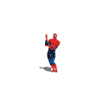
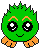
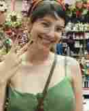
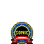
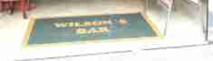
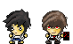
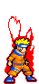

A História de Marco & Carol
A História de Marco & Carol
Estamos namorando há anos já, você acredita?

Since 3 de abril de 2019
Oi meu amor! Feliz aniversário de namoro. Não consigo acreditar que já estamos completando 1 ano de namoro. Parece cliché, mas ao passo que esse ano passou super rápido, tenho a sensação que te conheço desde a infância. Já não consigo mais imaginar minha vida sem você, não tem nada que eu planeje para meu futuro aonde você não esteja ao meu lado. Espero te fazer tão bem quanto você me faz bem.
Infelizmente, estamos passando nosso primeiro aniversário de namoro longe um do outro. Durante meses eu imaginei como seria essa comemoração, mas em nenhum dos meus planos imaginei estar com tamanha distância física entre nós. Mas, durante esse tempo difícil, você mostrou novamente o namorado incrível que é, sempre me dando atenção e carinho. Mesmo longe, penso em você todos os minutos do meu dia. Sinto sua falta e espero te ver logo, te amo muito.
- Carol, 3 de abril de 2020

Marco é um advogado gigante de anos. Todo o seu poder está concentrado em seu topete, por isso ele o defenderá com toda sua energia. Marco gosta de passar o tempo livre lendo artigos sobre as repúblicas bálticas e jogar basquete. Tem um problema grave de visão que o impede de visualizar mensagens de grupos do WhatsApp e tweets sobre o BBB.
Carol é uma programadora de anos obcecada por Final Fantasy e cachorros. Seu poder mais forte é o de lembrar o que você falou, não importa quanto tempo tenha passado. O hobby de Carol é olhar comida no Uber Eats e não pedir nada, bem como marcar o governador João Doria em publicações pornográficas em redes sociais.


Na calorenta cidade de São Paulo, no carnaval de 2019, acontecia dois eventos. Um churrasco no Bar do Wilson e um Bloquinho Emo. Ambos heróis estavam nestes eventos, Carol no churrasco e Marco no bloquinho. Uma das festas se provou muito divertida e tranquila, enquanto a outra beirava o caos. Numa tentativa desesperada de aproveitar as últimas horas da segunda-feira de carnaval, Marco sugeriu ao amigo Mirandinha que fossem ao Bar do Wilson. Talvez uma Original gelada resgatasse a pureza do feriado.
E foi lá que nossos heróis se conheceram. Carol estava com uma amiga, que estava a conversar com os dois sobreviventes do Bloco Emo. Como amiga mais velha e super protetora que é, decidiu se aproximar para averiguar a índole dos rapazes. Por estar levemente embreagada, puxou assunto com o rapaz que ela denominou como 'o alto bonito' com "ei, você já ouviu falar de um hentai de fadas e animais da floresta? É muito nojento, quer ver?"
Até hoje não se sabe se foi o assunto desgraçado ou as meias de e-girl que a heroína trajava, mas poucos dias depois nosso herói Marco César desabafou com o amigo Bruno que estava interessado em uma garota que havia conhecido no carnaval. Antes que ele pudesse agir, Carol o chamou para sair. E assim foram ao seu primeiro encontro, na Casa das Rosas. 17 dias depois, estavam namorando.


Nos conhecemos há
Estamos saindo há
Somos namorados há
Moramos juntos há

Veja o que algum dos nossos amigos tem a dizer pra gente!